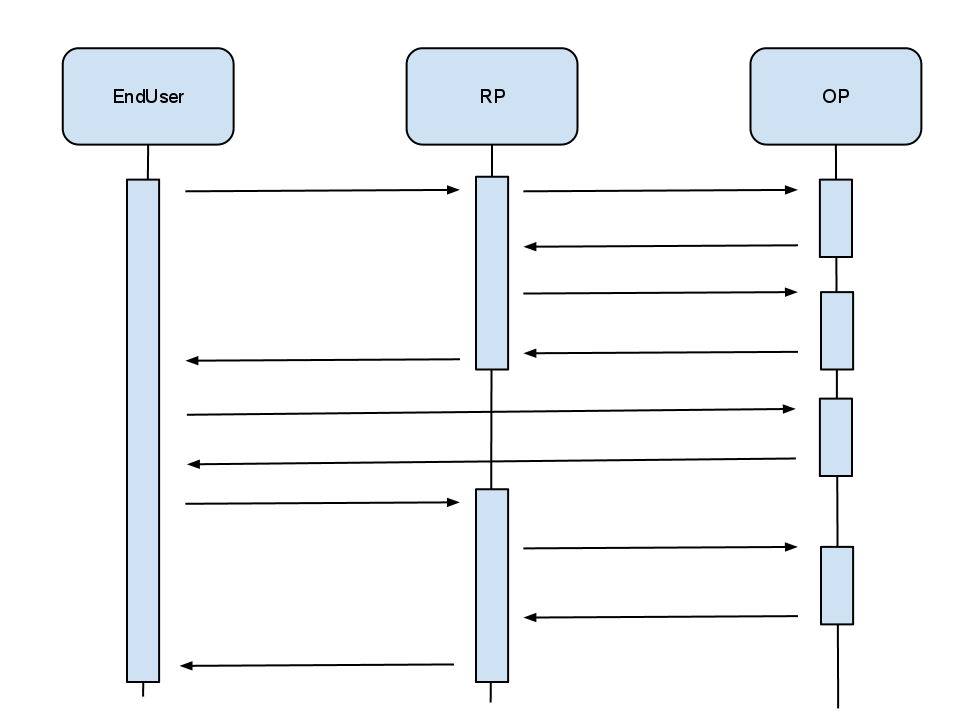

Open ID in 5 minutes
Michael Brunton-Spall
Nov 18, 2011
Michael Brunton-Spall
Nov 18, 2011

<xrds:XRDS xmlns:xrds="xri://$xrds" xmlns="xri://$xrd*($v*2.0)">
<XRD>
<Service priority="0">
<Type>http://specs.openid.net/auth/2.0/server</Type>
<Type>http://openid.net/srv/ax/1.0</Type>
<Type>http://specs.openid.net/extensions/ui/1.0/mode/popup</Type>
<Type>http://specs.openid.net/extensions/ui/1.0/icon</Type>
<Type>http://specs.openid.net/extensions/pape/1.0</Type>
<URI>https://www.google.com/accounts/o8/ud</URI>
</Service>
</XRD>
</xrds:XRDS>
]]>
This tells you to hit https://www.google.com/accounts/o8/ud
| Argument | English |
|---|---|
| openid.ns | Required, XML Namespace |
| openid.mode | should be checkid_setup |
| openid.return_to | Your callback url at end of process |
| Parameter | English |
|---|---|
| openid.mode | Should be id_res |
| openid.response_nonce | A nonce for the signature |
| openid.signed | What parameters were included in the signing |
| openid.identity | This is the identity you wanted |
| openid.sig | Signature for verification |
| parameter | English |
|---|---|
| openid.ns.ax | Must be set to http://openid.net/srv/ax/1.0 |
| openid.ax.mode | Set to fetch_request to get attributes |
| openid.ax.required | The attributes to request, country, email, firstname, lastname, language |
| openid.ax.type.* | A schema, e.g. http://axschema.org/contact/email for email |
| Name | Schema |
|---|---|
| http://axschema.org/contact/email | |
| country | http://axschema.org/contact/country/home |
| firstname | http://axschema.org/namePerson/first |
| lastname | http://axschema.org/namePerson/last |
| language | http://axschema.org/pref/language |